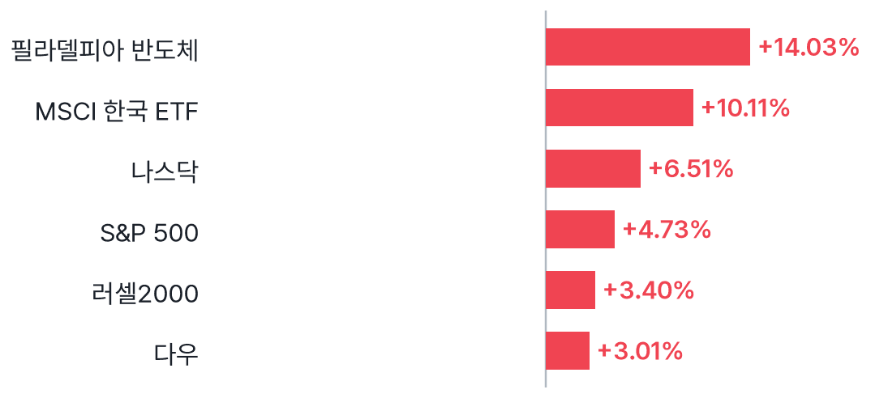
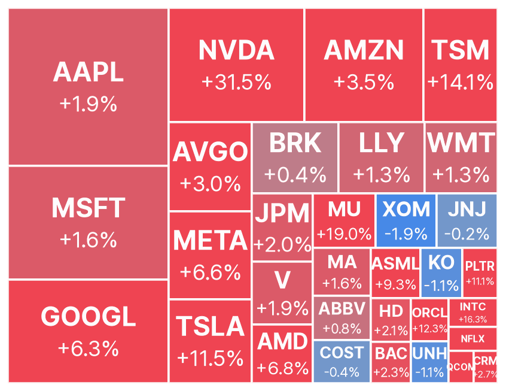
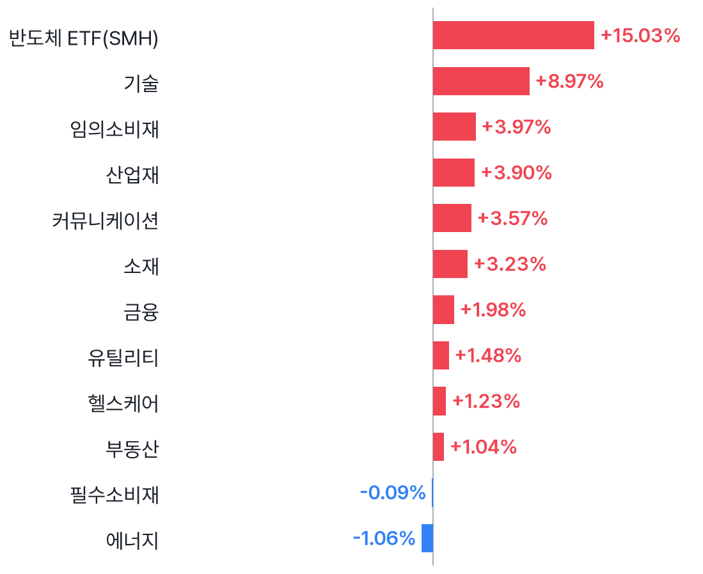
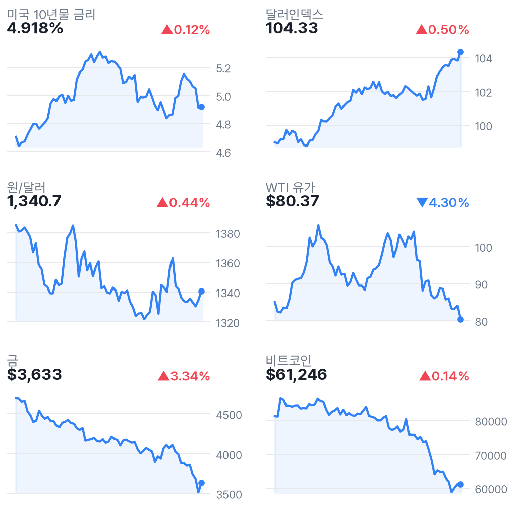
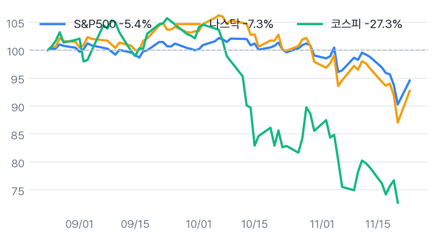

나스닥 6.51%↑, 젠슨 황 복귀에 반도체 급반등
✅ 핵심 요약
- 젠슨 황 CEO 복귀에 엔비디아 +31.48%, 나스닥 +6.51%.
- 필라델피아 반도체 +14.03%, 마이크론 +19.04%. 반도체 지수는 한 달로는 -11.05%.
- 한국 ETF(EWY) +10.11%, 원/달러 1,340.7원(+0.44%)으로 엇갈린 신호.
- 전일 코스피 -3.31%·코스닥 -1.58%. 오늘은 반도체 반등과 외국인 수급에 주목.
📊 주요 지표
S&P 500
7,237.17
▲4.73%
나스닥
24,089.56
▲6.51%
다우
49,595.31
▲3.01%
필라델피아 반도체
9,588.05
▲14.03%
VIX
26.62
▼25.83%
미국 10년물
4.918%
▲0.12%
원/달러
1,340.7
▲0.44%
달러인덱스
104.33
▲0.50%
WTI
$80.37
▼4.30%
금
$3,633
▲3.34%
비트코인
$61,246
▲0.14%
EWY(한국 ETF)
$135.72
▲10.11%
🧭 시장 해석
젠슨 황의 엔비디아 CEO 복귀 소식에 AI 투자심리가 살아나며 반도체가 뉴욕 증시 반등을 이끌었다. 기술주 ETF는 8.97% 올랐지만, WTI가 4.30% 내리면서 에너지 ETF는 1.06% 하락했다.
마이크론과 한국 ETF의 급등은 삼성전자·SK하이닉스의 개장 심리에 우호적이다. 다만 달러인덱스와 원/달러 환율이 함께 오른 만큼, 개장 초 반등이 이어지는지는 외국인 순매수 전환 여부와 함께 볼 필요가 있다.
급반등과 추세 전환은 다르다
필라델피아 반도체 지수는 하루 14.03% 올랐지만 한 달 기준으로는 11.05% 하락했다. VIX도 하루 25.83% 하락한 26.62로 내려왔으나 한 달 전보다 36.86% 높다. 하루 반등만으로 변동성이 진정됐다고 보기 어렵다.
AI 서버주, 실적 발표 뒤 반응은 엇갈려
오라클은 정규장에서 12.34% 올랐지만, HPE는 실적 발표 후 시간외에서 5.50% 내렸다. 델의 장후 실적에서는 AI 서버 수요와 수익성에 대한 회사 설명이 다음 확인 지점이다.
📈 차트
미국 주요 지수 등락률

2026-11-23 미국 정규장 종가 기준 · EWY는 코스피 선행 지표로 참고
미국 빅테크·대형주 히트맵

타일 크기 = 시가총액, 색 = 등락률 (빨강 상승 · 파랑 하락)
미국 섹터 ETF 등락률

SPDR 섹터 ETF + 반도체(SMH)
금리·환율·원자재 (3개월)

우측 상단 = 전일 대비
3개월 추세 비교 (시작=100)

미국 vs 한국 지수 흐름
🏦 애널리스트 · 리서치
- NVDA — 번스타인, 투자의견 Outperform으로 상향기존 Market Perform에서 상향했으며 목표가는 $200을 유지했다.
- NVDA — 씨티, 목표가 $225→$240 상향Buy 의견을 유지하면서 목표가를 높였다.
- CRM — 씨티, 목표가 $263→$198 하향Neutral 의견은 유지했다. 기술주 반등과 별개로 종목 목표가는 낮아졌다.
- META — 모건스탠리, 목표가 $820→$720 하향Overweight 의견은 유지하되 목표가를 낮췄다.
미국 대형주 의견·목표가 변경 7건 (Yahoo)
- 의견 상향NVDA · BernsteinMarket Perform → Outperform · 목표가 $200 → $200 · 11/24 00:44 KST
- 목표가 하향CRM · CitigroupNeutral · 목표가 $263 → $198 · 11/24 01:19 KST
- 목표가 하향CRM · TD CowenBuy · 목표가 $300 → $275 · 11/24 00:30 KST
- 목표가 하향HD · GuggenheimBuy · 목표가 $425 → $400 · 11/23 23:30 KST
- 목표가 하향META · Morgan StanleyOverweight · 목표가 $820 → $720 · 11/23 21:36 KST
- 목표가 상향NVDA · CitigroupBuy · 목표가 $225 → $240 · 11/24 01:29 KST
- 목표가 상향WMT · GuggenheimBuy · 목표가 $130 → $140 · 11/23 23:27 KST
국내 종목분석 리포트 26건 (네이버 리서치)
-
SK증권 · 2026-11-23
-
SK증권 · 2026-11-23
-
교보증권 · 2026-11-23
-
교보증권 · 2026-11-23
-
교보증권 · 2026-11-23
-
하나증권 · 2026-11-23
-
대신증권 · 2026-11-23
-
대신증권 · 2026-11-23
-
대신증권 · 2026-11-23
-
유안타증권 · 2026-11-23
-
유안타증권 · 2026-11-23
-
유안타증권 · 2026-11-23
-
유안타증권 · 2026-11-23
-
SK증권 · 2026-11-23
-
SK증권 · 2026-11-23
-
유진투자증권 · 2026-11-23
-
신한투자증권 · 2026-11-23
-
iM증권 · 2026-11-23
-
신한투자증권 · 2026-11-23
-
신한투자증권 · 2026-11-23
-
IBK투자증권 · 2026-11-23
-
SK증권 · 2026-11-23
-
한국IR협의회 · 2026-11-23
-
미래에셋증권 · 2026-11-23
-
미래에셋증권 · 2026-11-23
-
IBK투자증권 · 2026-11-23
국내 투자전략 리포트 8건 (네이버 리서치)
-
유안타증권 · 2026-11-23
-
유안타증권 · 2026-11-23
-
한화투자증권 · 2026-11-23
-
한화투자증권 · 2026-11-23
-
DS투자증권 · 2026-11-23
-
키움증권 · 2026-11-23
-
대신증권 · 2026-11-23
-
대신증권 · 2026-11-23
국내 시황정보 리포트 8건 (네이버 리서치)
-
신한투자증권 · 2026-11-23
-
유안타증권 · 2026-11-23
-
유안타증권 · 2026-11-23
-
DS투자증권 · 2026-11-23
-
신한투자증권 · 2026-11-23
-
대신증권 · 2026-11-23
-
대신증권 · 2026-11-23
-
다올투자증권 · 2026-11-23
국내 경제분석 리포트 6건 (네이버 리서치)
-
유안타증권 · 2026-11-23
-
신한투자증권 · 2026-11-23
-
신한투자증권 · 2026-11-23
-
신한투자증권 · 2026-11-23
-
키움증권 · 2026-11-23
-
iM증권 · 2026-11-23
📰 주요 뉴스
-
엔비디아에서 시작된 반등이 주요 지수로 확산.MarketWatch
-
반도체뿐 아니라 AI 인프라주에도 매수세 유입.MarketWatch
-
AI 관련주 급등과 달리 HPE는 실적 후 시간외 하락.MarketWatch
-
한도 완화와 실제 매입은 별개. 대형주 수급 확인 필요.비즈워치
-
반도체 외에 중국 소비·여행 관련주가 반응할 변수.연합뉴스
미국·글로벌 헤드라인 18건
-
WSJ Markets · 11/24 06:57
-
WSJ Markets · 11/24 06:56
-
WSJ Markets · 11/24 06:55
-
WSJ Markets · 11/24 06:53
-
MarketWatch · 11/24 06:51
-
CNBC Markets · 11/24 06:46
-
MarketWatch · 11/24 06:45
-
WSJ Markets · 11/24 06:45
-
CNBC · 11/24 06:43
-
MarketWatch · 11/24 06:36
-
MarketWatch · 11/24 06:33
-
MarketWatch · 11/24 06:28
-
NBC News · 11/24 06:25
-
MarketWatch · 11/24 06:24
-
The New York Times · 11/24 06:23
-
ABC News - Breaking News, Latest News and Videos · 11/24 06:22
-
MarketWatch · 11/24 06:19
-
MarketWatch · 11/24 06:15
국내 헤드라인 18건
-
Chosunbiz · 11/24 06:54
-
연합뉴스TV · 11/24 06:52
-
비즈워치 · 11/24 06:50
-
한국NGO신문 · 11/24 06:43
-
아시아경제 · 11/24 06:40
-
매일경제 · 11/24 06:35
-
아시아경제 · 11/24 06:28
-
글로벌이코노믹 · 11/24 06:27
-
MBC 뉴스 · 11/24 06:23
-
뉴스핌 · 11/24 06:19
-
MBC 뉴스 · 11/24 06:18
-
매일경제 · 11/24 06:13
-
연합뉴스 · 11/24 06:07
-
연합뉴스TV · 11/24 06:04
-
뉴스핌 · 11/24 06:04
-
연합뉴스 · 11/24 06:03
-
국민일보 · 11/24 06:01
-
연합뉴스 · 11/24 06:00
애널리스트 관련 헤드라인 12건
-
TradingView · 11/24 04:20
-
TradingView · 11/24 04:20
-
TradingView · 11/24 04:20
-
TradingView · 11/24 04:20
-
TradingView · 11/24 04:20
-
TradingView · 11/24 04:20
-
Superpower Daily · 11/24 03:39
-
Quantisnow · 11/24 02:15
-
Quantisnow · 11/24 01:53
-
Quantisnow · 11/24 01:53
-
CNBC · 11/24 01:41
-
Yahoo Finance · 11/24 00:18
🗓️ 일정
경제지표·이벤트 (KST)
- 23:45🇺🇸 미국 Flash Manufacturing PMI11/23 · 중요도 중간 · 예상 54.5 · 이전 56.0
- 23:45🇺🇸 미국 Flash Services PMI11/23 · 중요도 중간 · 예상 55.6 · 이전 57.9
- 00:00🇺🇸 미국 CB Consumer Confidence11/25 · 중요도 중간 · 예상 92.4 · 이전 91.7
어젯밤 장 마감 후 실적 (미국)
- HPE Hewlett Packard Enterprise Company장후시총 $54.3B · EPS 예상 $1.18 · 시간외 ▼5.50%
- A Agilent Technologies, Inc.장후시총 $48.0B · EPS 예상 $1.72 · 시간외 ▲7.86%
- TCOM Trip.com Group Limited시간미정시총 $25.5B · EPS 예상 $1.07 · 시간외 ▲0.00%
- ZM Zoom Communications, Inc.장후시총 $23.7B · EPS 예상 $1 · 시간외 ▼0.73%
다음 미국 세션 실적 예정
- DELL Dell Technologies Inc.장후시총 $176.8B · EPS 예상 $6.55
- BHP BHP Group Limited시간미정시총 $173.6B · EPS 예상 -
- ADI Analog Devices, Inc.장전시총 $167.6B · EPS 예상 $3.89
- MDT Medtronic plc장전시총 $127.8B · EPS 예상 $1.34
- ADSK Autodesk, Inc.장후시총 $51.1B · EPS 예상 $2.27
- WDAY Workday, Inc.장후시총 $42.1B · EPS 예상 $1.28
- DLTR Dollar Tree, Inc.장전시총 $25.9B · EPS 예상 $0.89
- HPQ HP Inc.장후시총 $25.2B · EPS 예상 $0.74
- BBY Best Buy Co., Inc.장전시총 $20.5B · EPS 예상 $1.48
👀 체크포인트
- 국내 개장삼성전자·SK하이닉스의 반등 지속 여부와 외국인 현물 수급
- 오늘 밤 미국 장전아날로그디바이시스 실적(EPS 예상 $3.89)
- 11/25 00:00미국 CB 소비자신뢰지수(예상 92.4, 이전 91.7)
- 내일 아침 미국 장후델 실적(EPS 예상 $6.55)과 AI 서버 전망